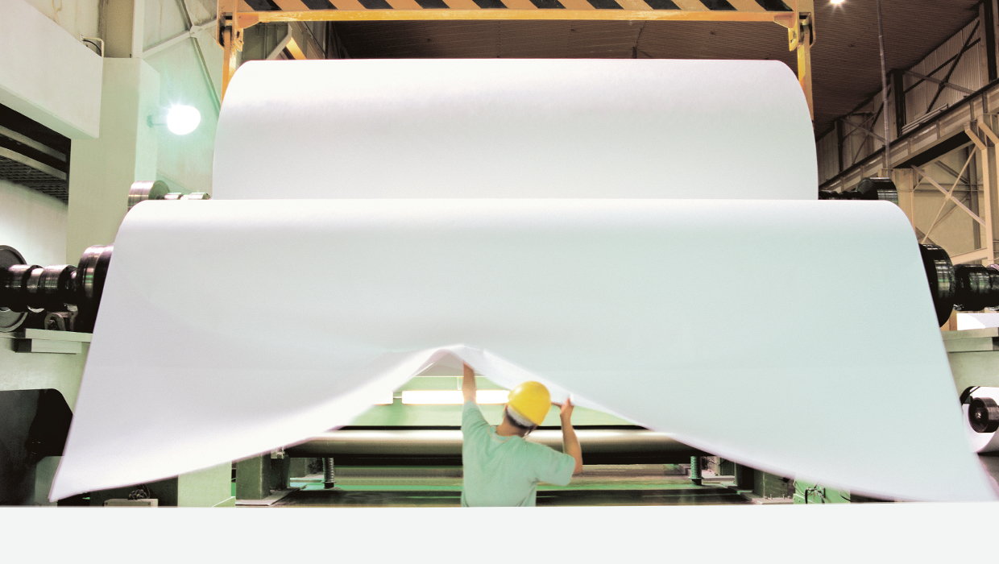

한솔제지
인류의 과거, 현재, 미래를 함께 할 수 있는 종이소재로 새로운 인류 문화와 고객의 미래를 창조합니다.

한솔그룹의 출발점이자 근간
1965년 10월 삼성그룹의 고(古) 이병철 회장이 새한제지를 인수,
1968년 10월 1일 첫 제품을 출시한 이래
종이를 통해 국민문화 창달과 국가경제 발전을 실천해 온 기업입니다.
1968년 10월 1일 첫 제품을 출시한 이래
종이를 통해 국민문화 창달과 국가경제 발전을 실천해 온 기업입니다.

끊임없는 기술개발과
품질 일등주의
국내외 생산, 유통, 판매를 연결한 통합 시스템을 통해
글로벌 선진 제지사로 발돋움 하였습니다.
생산에서 납기까지 품질관리를 위한 끊임없는 노력과
국제인증 획득 및 R&D 역량 강화를 통한 차별화된
신제품을 개발하여 고객의 니즈를 충족시키고 있습니다.
글로벌 선진 제지사로 발돋움 하였습니다.
생산에서 납기까지 품질관리를 위한 끊임없는 노력과
국제인증 획득 및 R&D 역량 강화를 통한 차별화된
신제품을 개발하여 고객의 니즈를 충족시키고 있습니다.
세계 최고의
가치 창출기업
한국 제지업계 최초 ERP 시스템을 도입으로 경영효율화를 이루며
국내 선도 제지사로서의 역할을 다하고 있습니다.
'고객지향, 새로운 가치, 더 나은 방식, 차별적 경쟁 우위'라는
4가지 사업원칙으로 세계적인 제지기업으로서 성장하기 위해
나아가고 있습니다.
국내 선도 제지사로서의 역할을 다하고 있습니다.
'고객지향, 새로운 가치, 더 나은 방식, 차별적 경쟁 우위'라는
4가지 사업원칙으로 세계적인 제지기업으로서 성장하기 위해
나아가고 있습니다.